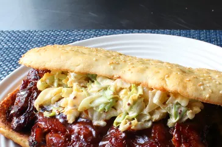

Chef John's Copycat McRib® Sandwich

I tip my cap to a certain fast food franchise for coming up with the idea for a boneless baby back rib sandwich, the only downside being that they use about 60 mystery ingredients-- ribs not necessarily being one of them. That's why you should try this easy homemade version with real ribs; simply bake, chill, cut, sauce, finish on the grill, and voila! One of the best sandwiches I've ever had.
Ingredients
For the Dry Rub:
- ⅓ cup kosher salt
- ¼ cup brown sugar
- 2 tablespoons chili powder
- 2 tablespoons freshly ground black pepper
- 1 tablespoon ground cumin
- 1 teaspoon cayenne pepper
For the Sandwiches:
- 2 racks baby back pork ribs
- 1 cup barbecue sauce, divided
- 4 sesame hamburger rolls, split and toasted
- 1 cup coleslaw
Directions
- Preheat the oven to 325 degrees F (165 degrees C).
- Mix salt, brown sugar, chili powder, pepper, cumin, and cayenne together for the rub.
- Place ribs on a foil-lined baking sheet. Season both sides generously with some of the rub. Reserve remaining rub for another use. Cover top with parchment paper and wrap foil over the edges. Cover the whole baking sheet with another large sheet of foil, sealing in the sides.
- Bake in the preheated oven until tender, about 2 hours and 45 minutes.
- Unwrap ribs and let cool briefly until safe to handle. Pull out the bones, stuffing any loose pieces of meat back into the holes and checking carefully for bone fragments. Wrap ribs back up and refrigerate until cold, 8 hours to overnight.
- Cut each rack in half. Brush both sides generously with barbecue sauce.
- Preheat a charcoal grill for high heat and lightly oil the grate.
- Grill ribs until heated through, 3 to 4 minutes per side. Remove from grill and brush with more barbecue sauce.
- Drizzle more barbecue sauce onto each roll. Sandwich each rib section between a roll and top with coleslaw.
Return To Home